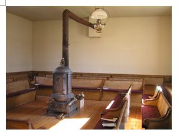

The South Starksboro Friends Meetinghouse, built in 1828 by the Creek Preparative Meeting, as it was then called, reflected the spiritual beliefs of its builders. Quietly simple in design and built to last, the Meetinghouse has served the Quaker community well for the past 184 years. The building has received only one major additon - of seven feet to the front of the structure in 1871 - to create an entrance hall. At some point, southern yellow pine flooring was installed as well as a raised platform at the rear of the building providing space for a small pulpit, which was used by the pastor during the pastoral phase of the Meeting's history. The last pastor left in 1923. Reflecting the Meeting's return to the more traditional practice of a Friends unprogrammed meeting in the 1970s, the pulpit and platform were removed in a 1984 renovation. At that time the Meetinghouse was moved about 50 feet to the north onto a new concrete foundation that replaced the original stone foundation which was causing serious structural problems. Further renovations included the removal of the interior lath and plaster, which was replaced with sheetrock. In 1985, a First Day School building was constructed in a style that was designed to complement the larger Meetinghouse.
In 2008, the meetinghouse was made accessible with the construction of a graded berm leading to the entry way.
Welcome
About us
Meetinghouse
Directions